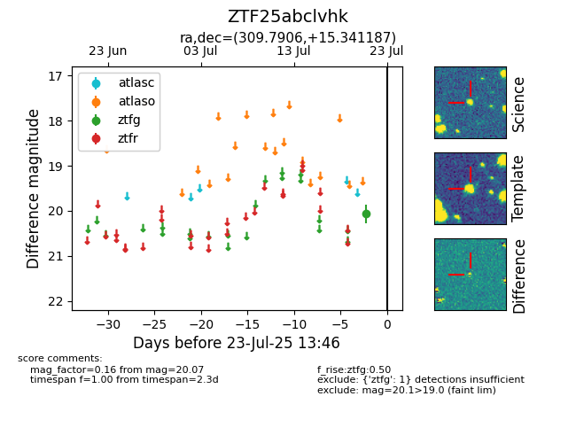

Target ZTF25abclvhk at 2025-07-23 13:46, see:
FINK: fink-portal.org/ZTF25abclvhk
Lasair: lasair-ztf.lsst.ac.uk/objects/ZTF25abclvhk
ALeRCE: alerce.online/object/ZTF25abclvhk
alt names
ZTF25abclvhk (ztf,fink)
coordinates:
equatorial (ra, dec) = (309.7906,+15.34119)
galactic (l, b) = (59.7488,-15.55076)
photometry
last ztfg=20.07
1 ztfg detections
